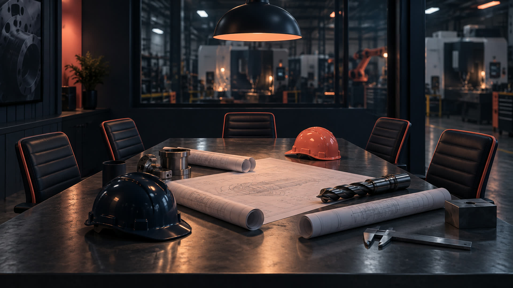
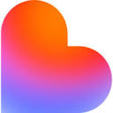
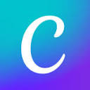
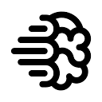
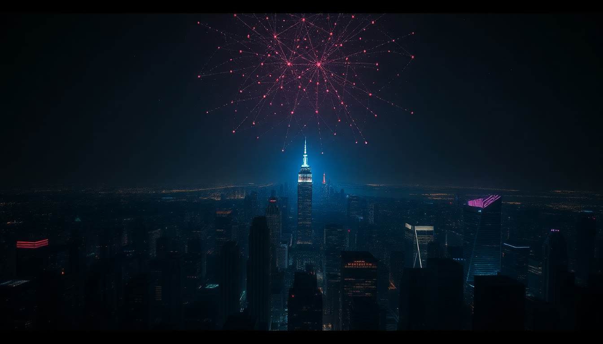
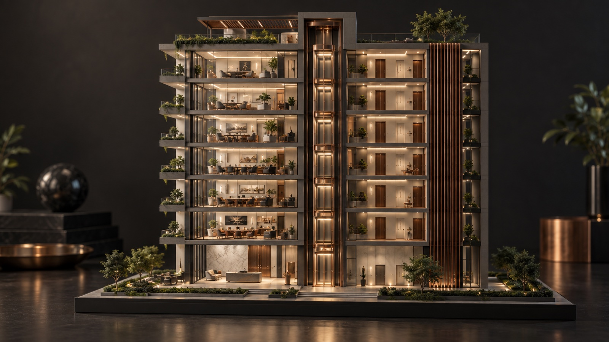
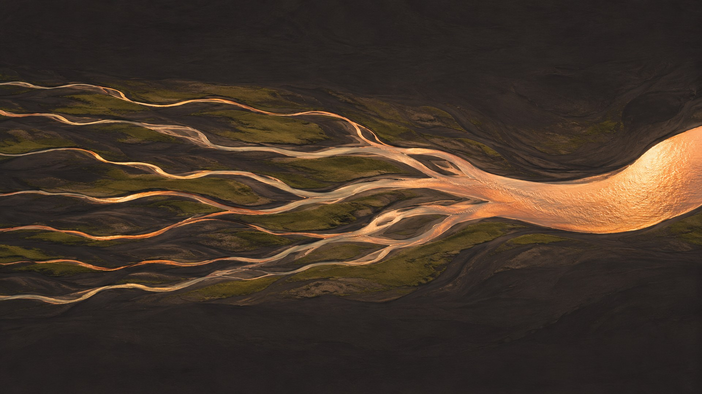
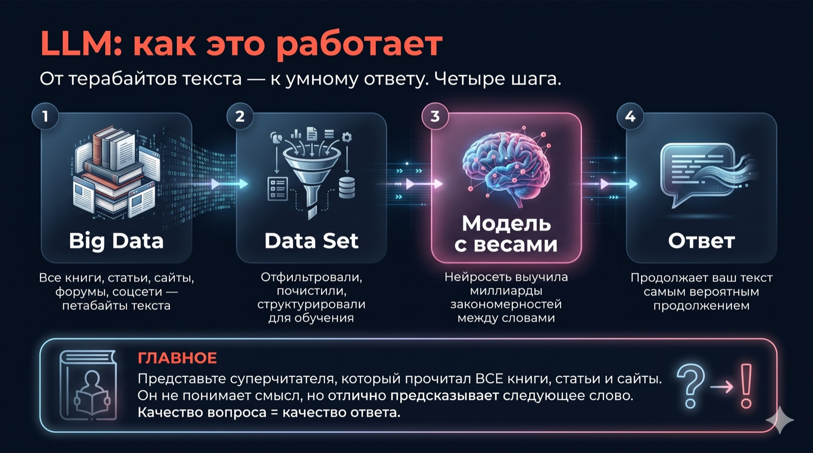
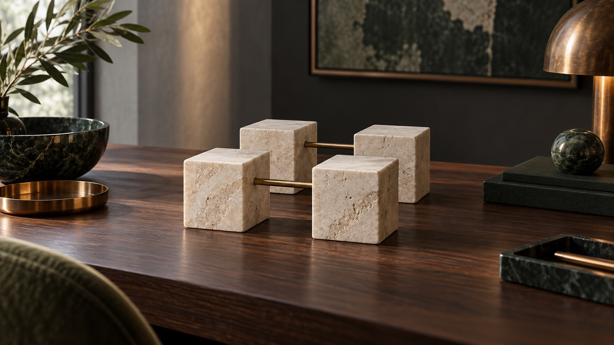

Проверьте, что всё открывается

Wi-Fi зала
В нём уже есть VPN. Подключились, и  ChatGPT открывается без настроек.
ChatGPT открывается без настроек.
chatgpt.com
Вход через аккаунт Google. Окно чата на экране, можно с телефона.
Шпаргалка
QR-код справа. Откройте на телефоне и держите второй вкладкой.
Альберт Валеев
Практик внедрения ИИ в бизнес: обучаю команды и внедряю ИИ в компаниях.
Предприниматели, руководители, команды компаний. Вы седьмой очный поток.
От первого ассистента сотрудника до агентов, которые ведут процессы.

 Midjourney
Midjourney
Lovable HeyGen
HeyGen
Canva Runway
Runway CapCut
CapCut Notion
Notion Hugging Face
Hugging Face
IdeogramКаждый день пробую новое на своих задачах и в компаниях. Сюда приношу только то, что работает. Остальное я отсеял за вас.
Альберт ВалеевНейросетей сотни. Каждую неделю новая
Всё, что вы получали от меня в чате, писал мой агент
Приветствие, инструкция подготовки, файлы VPN, напоминания. Я только говорил «ок».
Отвечает в Telegram
Читает чаты, ведёт календарь, шлёт напоминания и сводки.
Собирает материалы
Эта презентация и шпаргалка: собрал, проверил, выложил.
Строит и рисует
Картинки на этих слайдах, приложения, сайты, проверки.
С каким опытом вы пришли
3 человека ещё ничем не пользовались: вы в правильном месте, всё покажу по шагам.
Что вам мешает и где мы это закроем
Он сам предложит десять задач под вашу работу
Сначала как он устроен и что умеет, потом руками на ваших задачах
Формула постановки задачи и двенадцать приёмов
Ассистент под процесс, проекты, задачи по расписанию,  Codex с вашими таблицами
Codex с вашими таблицами
Глубокое исследование: десятки источников со ссылками
Досье о вас, которое переносится в любую нейросеть
От знакомства с  ChatGPT к своему агенту
ChatGPT к своему агенту
В анкетах вы просили агента и автоматизацию. Вот как к ним приходят.
Досье, инструкция качества, первая задача своими словами.
Точная постановка задачи, ассистент под процесс, проекты, навыки и расписание.
 Codex работает с вашей папкой, своё приложение и команда агентов.
Codex работает с вашей папкой, своё приложение и команда агентов.
ИИ-мышление: думать вместе с ИИ
Принципы
Как это устроено. То, что не меняется, когда выходит новая модель.
Смыслы
Зачем и почему в эту сторону. Что меняется в работе и в голове.
Сценарии
Что сделать на ваших задачах. Готовые ходы под вашу рутину.
Инструменты
Какая кнопка. Только в последнюю очередь.
Этому учимся все восемь занятий.
Другие учат кнопкам. Кнопки меняются каждый месяц, гнаться за ними бессмысленно.
Мы учим думать вместе с ИИ. Поняли, как устроено и зачем, знаете, что сделать, и любой новый инструмент разберёте за десять минут.

Восемь занятий: что вы сможете после каждого
Вторник и четверг, 19:00–21:00, здесь же. Каждое занятие стоит на предыдущем.
Карта
 ChatGPT настроен под вас: знает роль, задачи и сам предлагает, с чего начать
ChatGPT настроен под вас: знает роль, задачи и сам предлагает, с чего начать
Промпт-инженерия
Формула и двенадцать приёмов: ответ с первого раза, а не с пятого
Ассистентный подход
Свой ассистент под процесс: вход, одна функция, выход, три теста
ChatGPT на полную
Проекты, навыки, плагины к почте и календарю, задачи по расписанию
Codex от А до Я
Агент работает с папкой на вашем компьютере: файлы, таблицы, отчёты
Визуал
Презентации, сайты, картинки и документы за минуты, а не за вечер
Глубокое исследование
Дипресёрч: рынок, конкуренты и цены с источниками, а не по памяти
Агент-строитель
 Codex: своё приложение и команда агентов. Финал и сертификаты
Codex: своё приложение и команда агентов. Финал и сертификаты
Здание ChatGPT: восемь этажей

Сегодня: он знает вас и понимает задачу с первого раза.
Помощник под процесс и папка под клиента с файлами и правилами.
Ваши приёмы одной кнопкой, почта и календарь подключены, сводка утром сама.
Свой калькулятор, сайт, дашборд. Агент, который правит файлы руками.
Шпаргалка: ваш главный рабочий файл
Наведите камеру на QR справа. Откройте на телефоне сейчас и держите второй вкладкой.
Я говорю «шаг 3»
Все промпты пронумерованы, искать ничего не нужно
Вы находите по номеру
И нажимаете «Копировать» под текстом
Вставляете в ChatGPT
Печатать руками не нужно. Ваше дело нажать и смотреть, что будет
План полёта: 6 блоков · 120 минут
Блок 5 самый длинный: собираем ваш  ChatGPT руками. Цвет блока тот же на слайдах и в шпаргалке.
ChatGPT руками. Цвет блока тот же на слайдах и в шпаргалке.
Старт и знакомство
5 минут
Кто в зале и что вы получите
17 минут
Как устроен ИИ
22 минуты
Зачем это сейчас и как думать вместе с ИИ
14 минут
Собираем личный контур: шаги 0–6
55 минут
Итог и практика до вторника
7 минут
ИИ, нейросеть, языковая модель: одно внутри другого
Искусственный интеллект
Любая программа, которая делает работу, которую раньше мог только человек.
Deep Blue обыграл Каспарова в 1997 году. Это ИИ, но не нейросеть: ему прописали правила.Нейросеть
Правил ей не пишут. Ей показывают миллионы примеров, и закономерности она находит сама.
Телефон узнаёт ваше лицо, камера на парковке читает номер.Большая языковая модель
Нейросеть, которую учили на текстах. Поэтому она разговаривает.

Эволюция: от многих узких к одной, которая умеет всё
Много узких нейросетей
Отдельная на картинки, на речь, на музыку, на перевод. Каждая умеет одно.
Одна научилась языку
Появилась схема, которая держит смысл длинного текста. В 2022 году на ней вышел  ChatGPT.
ChatGPT.
Ручьи слились в реку
Одна модель читает, видит фото, слышит голос и отвечает голосом.
Ей дали руки
Модель сама открывает файлы, сайты и программы и доводит работу до конца. Это агенты.
GPT: что это вообще значит
Не ищет готовый ответ в базе, а создаёт новый текст с нуля, слово за словом.
Обучили один раз на гигантском объёме текста. Дальше он пользуется тем, что усвоил.
Схема из статьи Google 2017 года. Научила машину держать смысл длинного текста.

Три мира нейросетей: США, Китай, Россия
США
Самые сильные и универсальные. Из России нужен VPN, зато лучший результат.
Китай
Догнали США за полтора года. Бесплатные, часть работает без VPN, хороши с файлами.
Россия
На шаг позади, зато без VPN, по-русски и с российскими законами в базе.
Платить или хватит бесплатного
| Что нужно | Бесплатно | Подписка Plus |
|---|---|---|
| Обычные вопросы, письма, тексты, разбор документа | ✓ | ✓ |
| Загрузить файл, фото, скан, таблицу | ✓ | ✓ |
| Голосом вместо набора текста | ✓ | ✓ |
| Рассказать о себе один раз, чтобы он помнил | ✓ | ✓ |
| Много запросов подряд и самые сильные модели | ○ | ✓ |
| Глубокое исследование на десятках источников | немного | ✓ |
| Проекты: папка с файлами и своими правилами | немного | ✓ |
| Свои ассистенты и задачи по расписанию | ○ | ✓ |
Названий много, а окно у всех одно и то же
Форму чата выбрали не случайно: переписка знакома всем. Слева история, снизу строка ввода, скрепка и микрофон.
скрепка · микрофон
скрепка · микрофон
скрепка · микрофон
скрепка · микрофон
Память ИИ в 2026 году: он помнит вас, но по-разному
Год назад закрыли чат, и он всё забыл. Сейчас  ChatGPT,
ChatGPT,  Claude,
Claude,  Gemini,
Gemini,  GigaChat и
GigaChat и  Алиса помнят вас между чатами, если память включена.
Алиса помнят вас между чатами, если память включена.
Инструкции работают всегда
Кто вы и как вам отвечать, пишете один раз в настройках. Это действует в каждом новом чате.
Память это его заметки о вас
Что запомнить из разговоров, он решает сам. Сводку можно открыть, поправить или стереть.
У каждого чата свой стол
На бесплатном  ChatGPT это около двенадцати страниц. В очень длинном чате начало размывается.
ChatGPT это около двенадцати страниц. В очень длинном чате начало размывается.
Большая работа живёт в проекте
Отдельная папка с файлами и своими правилами. Правила проекта важнее общих.
Впервые в истории дефицит интеллекта закончился
Где взять того, кто умеет?
Умного специалиста надо было найти, нанять и дождаться. Аналитик, юрист, финансист, редактор: каждый отдельно, каждый дорого.
Умею ли я поставить задачу?
Все они в одном окне, круглосуточно, почти бесплатно. Узкое место переехало из «кого нанять» в «как сформулировать».
Собираем
личный контур
Через час  ChatGPT знает вашу роль, ваши задачи
ChatGPT знает вашу роль, ваши задачи
и сам говорит, чем вам полезен
Собираем ваш личный контур
Шаг 0 · Рабочее место ChatGPT: шесть кнопок, и всё
Вы: Возьми у меня интервью, чтобы понять мою работу…
 ChatGPT: Вопрос 1 из 10. Чем занимается ваша компания? (что продаёте, кто клиенты)
ChatGPT: Вопрос 1 из 10. Чем занимается ваша компания? (что продаёте, кто клиенты)
Схема окна, не снимок экрана
Новая задача, новый чат. Интервью в одном, проверка в другом.
Файл, фото, скан, таблица.
Отвечайте на интервью голосом, так быстрее.
Навести на документ и спросить.
Сюда положим инструкцию и досье.
Шаг 6 · Берём задачу номер один и закрываем её своими словами
Из трёх задач, которые он предложил, берите самую верхнюю. Никаких формул: что за задача, для кого, в каком виде результат.

Что унесли сегодня
Кто в зале и что мешает
Ваши задачи, ваш уровень и где курс закроет каждое «мешает».
Чёрный ящик открыт
ИИ, нейросеть и языковая модель, как он учился и почему ошибается. Семь принципов.
Думать вместе с ИИ
Третий класс навыков. Надеть, а не лечь. Рефлекс одного дня.
ChatGPT знает вас
Инструкция качества, досье в памяти, десять задач под вас, первая закрыта.